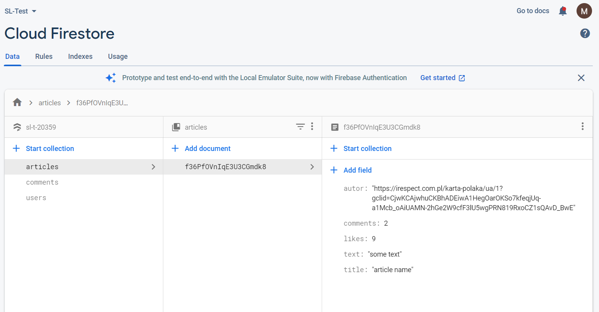
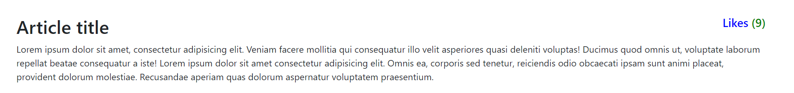
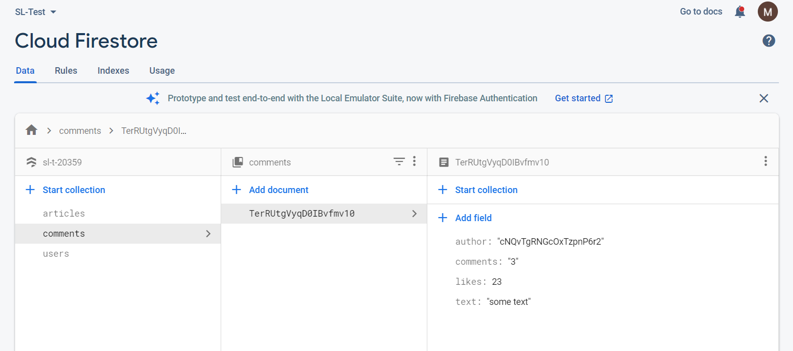
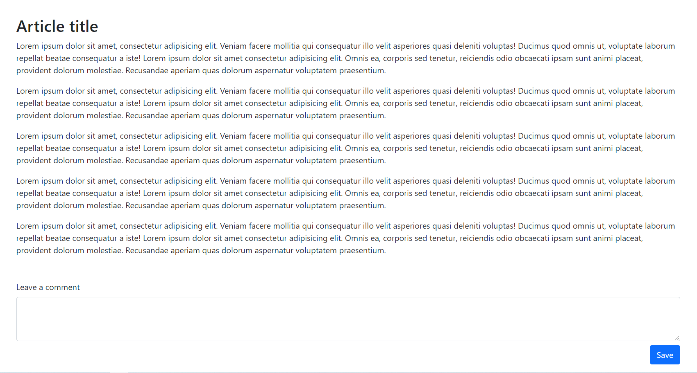

Практикування редагування документів у базі данних. (Приклад додавання коментарів до статті)
1. Додайте логінізацію на вашу сторінку. Та зберігайте користувача у localStorage
2. Додайте спиок статтей які є у вашій базі данних у колекції articles. Список відображатиме лише назву статті та її id. По кліку на назву статті витягуйте з бази додаткову інформацію про статтю (текст статті, кількість переглядів та кількість коментарів).

3. Після завантаження статті оновлюйте її кількість переглядів.
4. Додайте можливість поставити лайк статті.

5. Додайте нову колекцію comments у Firestore Database. Кожен коментар матиме такі поля: author, text, likes

6. Додайте можливість прокоментувати статтю.

hellp